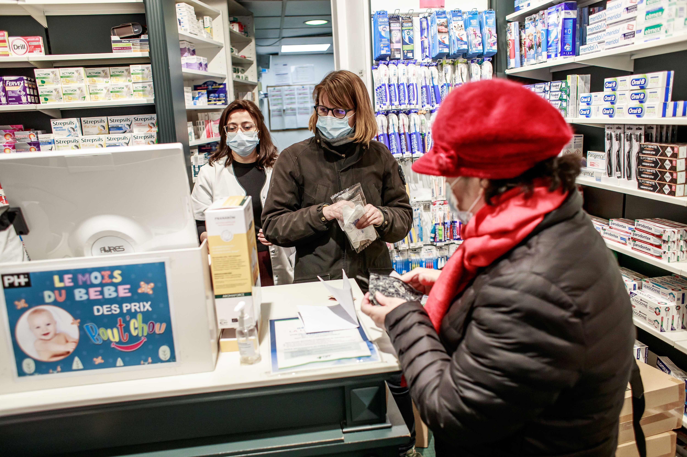

Nicotine therapy for coronavirus: the evidence is weak and contradictory
France recently put limits on the purchase nicotine-replacement products, stopping online sales and restricting buyers to a one-month supply of gums, patches and inhalers bought at pharmacies.The limits have nothing to do with the products’ usefulness or safety – these are well established.They have been put in place to stop people stockpiling them following news that nicotine may play a role in combating COVID-19.
There are a number of reasons nicotine is beginning to be explored in this context, but as with everything about the new coronavirus, much remains unknown.
At the outset of the pandemic, smoking was identified as a risk factor for COVID-19, with the expectation that the same pattern would be seen as with other respiratory illnesses, namely, that smoking would increase the chance of getting infected and of having worse outcomes once infected.But some studies have suggested that people who smoke may be at less risk from COVID-19.
So far, no one is sure if this is true.Different studies find conflicting patterns.And in those that find less COVID-19 infection in people who smoke, it is unclear if this is because of a genuine effect or because of issues with analyses or reporting.
We need better quality studies to investigate whether people who smoke are less likely to contract COVID-19.Some of these are underway, but the search for COVID-19 medications is urgent.While we wait for more definitive results, scientists are pressing ahead, following all possible leads in the hunt for a treatment.
Tobacco cigarettes are uniquely deadly, killing one in two regular users.This means it is much more likely that a person who smokes will die from smoking than from COVID-19.
Even if smoking proves protective against COVID-19, no one would ever suggest starting smoking or continuing to smoke to reduce risk.But if something in cigarettes could be protecting people who smoke against COVID-19, there would be a reason to explore this further to see if the useful component could be delivered more safely.The most talked-about candidate so far is nicotine.
Nicotine is what makes cigarettes addictive, but it doesn’t directly cause the many diseases that affect people who smoke and those around them.
Nicotine has a bad name, which is warranted when considering that more than 8 million people die because of tobacco addiction each year.Yet this bad name is not warranted when it comes to nicotine replacement therapy, which delivers nicotine without all of the other harmful components of cigarette smoke.
More than a hundred randomised controlled trials have tested nicotine replacement therapy as a way to help people quit smoking, and there is strong evidence that it is safe when used as intended.In fact, the World Health Organization considers nicotine replacement therapy an essential medicine.
Nicotine has been shown to be protective in a handful of other diseases, and laboratory studies suggest it may play a part in regulating an enzyme called ACE2, which is thought to be involved in COVID-19.
The cell receptors that nicotine binds to are ones that SARS-CoV-2 is also thought to affect.Some scientists speculate these links mean nicotine would lead to worse COVID-19 outcomes.Others speculate the opposite.Until tests are done in humans, it’s impossible to know for sure.
Early studies in Wales and France are testing nicotine replacement therapy as a potential treatment for COVID-19, and more trials may soon be underway.
It has also been suggested that studies currently testing nicotine replacement therapy for other conditions, such as a US study looking at nicotine replacement for reducing cognitive impairment, could look at COVID-19 outcomes as well.
If the evidence begins to suggest that nicotine replacement therapy does improve COVID-19 outcomes, there would be a reason to rejoice.We need treatments urgently and nicotine replacement therapy is considered safe, is widely available, and is relatively cheap as it’s not protected by patent.But we are unlikely to know whether nicotine replacement has a role in COVID-19 any time soon.
In the meantime, there is no value in people purchasing nicotine replacement to help protect themselves against COVID-19.Such a move could cause harm by reducing the availability of nicotine replacement therapy for people who wish to quit smoking.For now, nicotine supplies must be preserved for the people who need them.
Posted On: 2020-06-02T13:51:00
Posted By: Nicola Lindson

Content Date: 2020-06-02
Download Date: 2021-04-08
Document ID: L0C049J0A